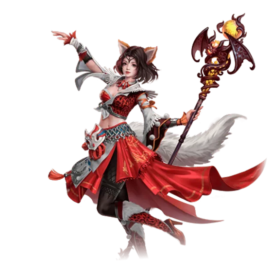

Saga do Herói: Feiticeira
A mais curta das sagas antigas e a única que é, de ponta a ponta, sobre domar. Yeona ensina a capturar, o Gigante Celestial Hércules aparece três vezes, e no fim você dá nome a ele.

O que você ganha
Mini Yeona — um mascote cosmético, que só aparece depois de ser adicionado ao Códice.
Título: Um Grão no Universo — +100 de HP, e colorido.
Os dois saem do baú brilhante no canto inferior direito do retrato, dentro da janela da Saga do Herói. Uma vez só por personagem.
Antes de começar
A saga pede nível 80 de pico histórico e cultivo Mahayana. E vale esperar: a experiência das missões escala até o nível 100 e para de crescer ali, então fazer antes disso é jogar fora boa parte do que a saga paga.
Como abrir
Abra a Saga do Herói, clique na Feiticeira e pegue a missão Um Pedido com Krast Nerion, em 249,652(26), na Cidade das Feras.
O que costuma travar
Tire o equipamento antes de capturar as lebres. Com o equipamento posto você mata a lebre em vez de pegá-la. O buff da Yeona é que causa o dano — use a jaula quando o HP da lebre estiver abaixo de 50%.
O buff da Yeona expira. Se acabar antes de você pegar as cinco, volte nela e renove.
As 27 missões, em ordem
- Um Pedido — pegue com Krast Nerion em
249,652(26), na Cidade das Feras. - Aceitar o Pedido — fale com Krast Nerion e encontre Yeona na Vila Langour, em
668,636(21). - Resolvendo a Crise — fale com Yeona e depois com Susanna.
- Cortando a Grama — cave 5 Feno perto de
675,633(21)e entregue a Yeona. - Conhecendo Hércules — fale com Yeona e feche o diálogo.
- Aprendendo a Domar — capture 5 lebres com a jaula do inventário e entregue a Yeona em
669,636(21). Tire o equipamento primeiro. - Retorne a Cidade das Feras — entregue no Escorpião com Varizes Cookie, em
250,651(25). - Ventos da Verdade — pegue com Yeona e fale com o Alquimista.
- Coragem — pegue no Alquimista e encontre a Vovó Nanda Morris na Cidade do Dragão Sul, em
586,620(22). - Além do Esperado — fale com a Vovó e espere 10 segundos, depois mais alguns.
- Começar a Aprimorar — pegue na Vovó, continue com Yeona e volte à Vovó.
- O Coração da Direção — pegue na Vovó, vá à Vila do Nada em
668,637e fale com Yeona. - Encontrando o Hércules de Novo — fale com o Gigante Celestial Hércules e use a ação acenar.
- Evento Inesperado — depois da cena, pegue a missão no Biscoitinho e vá à Vovó Nanda Morris.
- Proibição de Gênesis — fale com a Vovó e encontre o Demônio Imortal Jeffrey em
467,548, no Grande Lago. - A Longa Conversa — fale com Jeffrey e vá a
452,568. - Encontrando Susanna — fale com Susanna, colete 5 Erva Euforia perto de
433,557e entregue ao Dodo em452,568. - Estereótipo — fale com Levado e volte ao Demônio Imortal Jeffrey em
467,548. - Destino — pegue com Jeffrey, fale com Yeona depois do teleporte, mate 10 Sombrio Antílope ou Ave Elísio e encontre o Escorpião em
472,518. - A Coleira — fale com o Gigante Celestial Hércules e encontre o Sombrio: Gigante Celestial em
477,510. - O Plano — fale com o Sombrio, cave o Fragmento de Recipiente em
467,510, fale com ele outra vez, mate o Sombrio: Caniçal em474,507e pegue a missão no círculo azul em474,505. - Caminho de Volta — depois de pegar no portal, fale com o Escorpião.
- Os Velhos Tempos — fale com a Vovó Nanda Morris, vá a
669,636, fale com Yeona e depois com Levado. - Yeona: o Diário — fale com ela duas vezes e, depois das lembranças, fale com o Gigante.
- Sob a Muralha Ancestral — vá a
275,836, fale com Yeona e pegue a próxima com o Gigante. - Acompanhar — vá até a Vovó Nanda Morris, na Cidade do Dragão.
- Um Novo Começo — fale com a Vovó e dê nome ao Gigante: escreva Hércules (Yeona).
Parabéns! Você terminou a Saga do Herói da Feiticeira.
Volte à janela da Saga do Herói, abra o retrato de Yeona e clique no baú para pegar Mini Yeona e o título Um Grão no Universo, que vale +100 de HP.
Conferido contra a Wiki PW, o Trivia PW e a PWpedia. Achou um passo diferente no jogo? Conte no Discord que a gente corrige.